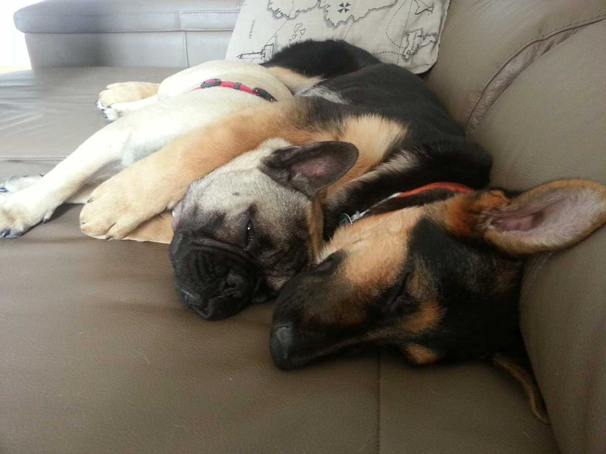

"ESTAMOS encantados con el trato y la atención recibida hacia nuestra querida zoe y nosotros especialmente a Pet Care por parte de esta estupenda veterinaria profesional. Nos atienden a cualquier hora y eso nos transmite mucha tranquilidad. Siempre con una sonrisa. A destacar también las estupenda instalaciones de la clínica.
Aunque nuestra historia no ha tenido un final feliz, sólo puedo dar las gracias por la profesionalidad y el trato humano. Lola no ha estado rodeada de un simple veterinario hasta el final, sino que la han acompañado unas personas excelentes en lo profesional y lo humano y con mucho amor por los animales. Gracias chicas, sois un ejemplo para muchos. Recordaremos siempre a Lola y también vuestro trato con nosotros.
Desde el primer día que pisamos la clínica con Adex, recién llegado a nuestro hogar, supimos que Jessica sería nuestra veterinaria de confianza, a la que agradecemos enormemente el trato recibido hacia nosotros y nuestros perros Adex y Teo; ellos son felices cada vez que vamos aunque el motivo no sea una revisión, o por poner las vacunas si no porque están malitos, saben que cada vez que ha sido por enfermedad no pueden estar en mejores manos por el gran cariño que demuestran y la profesionalidad. Dándonos siempre los mejores consejos y cuidados para ellos. Como profesionales sanitarios que somos es inevitable no ser exigentes en lo que concierne a salud y al trato recibido y desde luego que superan las expectativas con creces. Judith siempre se rodea de un gran equipo de profesionales y no podemos más que dar las gracias y la enhorabuena por el trabajo realizado.
